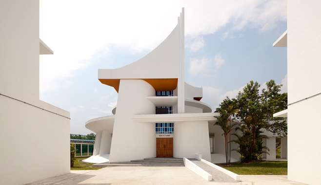
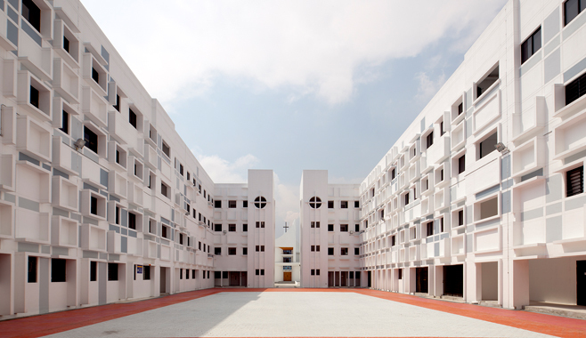
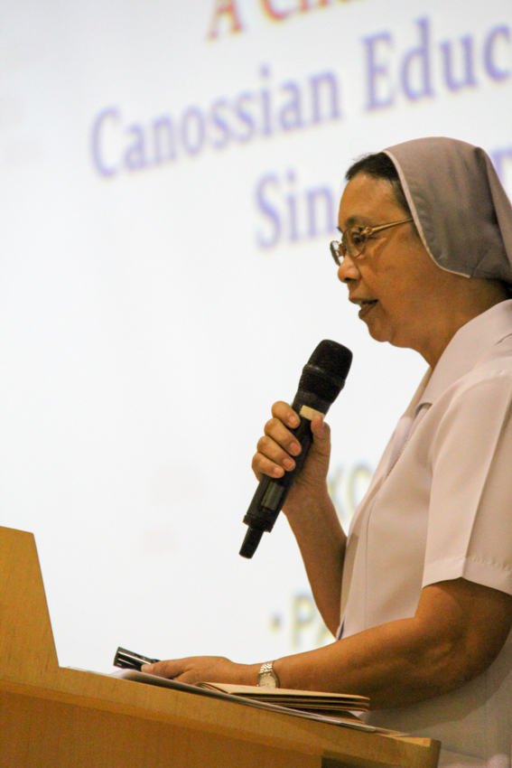
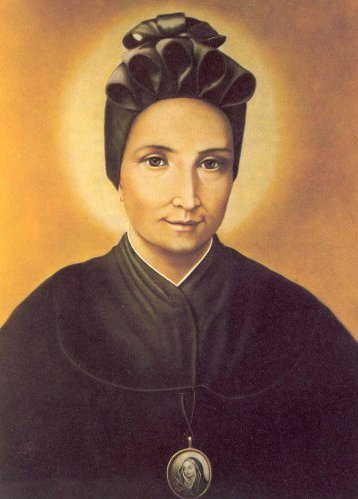
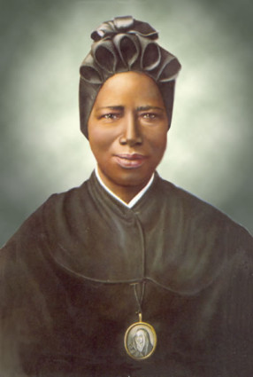
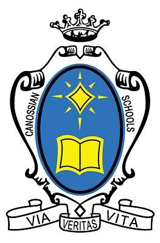

    

The School Song
Pause
Go Back
Wanna see the uniforms?
Who's this?
She is St.Magadalene of Canossa, the founding sister of the Canossa Family (which the school is part of). I forgot her backstory, just bits that she was born into Italian nobility in Verona, but left her home to become a nun and help the orphans. She was one of the 2 main saints my school followed, and I remember that whenever "St.Magdalene of Canossa" was mentioned, we had to respond with "pray for us".
Who's this?
The other one of the 2 main saints of the school - St. Josephine Bakhita. She was sold into slavery all her life and tortured by her masters ever since she was 8(?) years old, but she still learnt to forgive them. So I guess what my school wanted to teach us through this saint was forgiveness.
What's this?
St. Anthony's Canossian Primary School used to be a convent school, but now it is an all-girls Catholic school. I spent 6 years of my life growing up with just girls (I still can't believe that fact). We had daily morning prayers, and monthly Masses that was a pain to sit through. The nuns lived in a convent in the school and we saw them around as much as we saw our teachers.
What's this?
They called this the Festival Court - and we used to sit in this wretched place for combined Masses with the secondary school next door. The floor was rough with the occasional appearance of millipedes crawling around. Going through a 2 hour Mass while sitting on the floor, under the hot Singapore sun was torture. I still didn't get why it was called the Festival Court, when really, it is just a division between the primary and secondary schools and also the pathway to the Chapel.
What's this?
The Chapel - we were told that it was the "Holy Place", but somehow everyone believed it was haunted. I was there before dawn and got chased out by a scrawny lady who made weird noises.